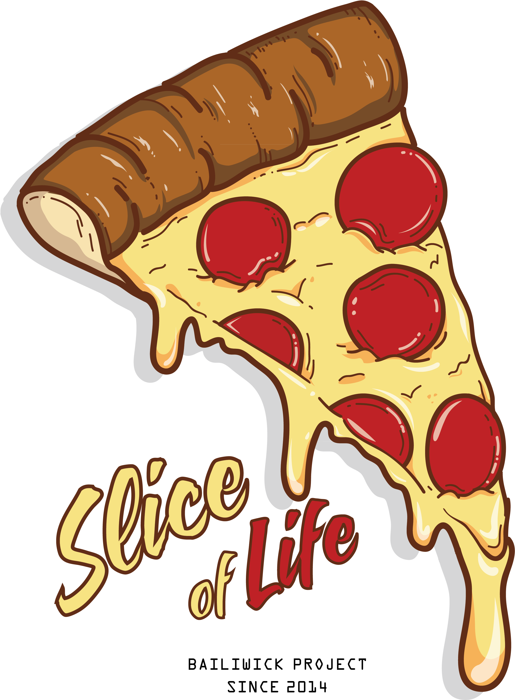

<mat-toolbar color='primary'>
 
  <mat-toolbar-row>
    
  <span>Pizza</span>
    <div class="right-tool">
        <ul>
            <li routerLink="">Menu</li>
            <li>Offer</li>
            <li routerLink="register" *ngIf="!rootService.isLoggedIn">Register </li>
            <li routerLink="login" *ngIf="!rootService.isLoggedIn">Login</li>
            <li><mat-icon (click)="displayCart()" svgIcon="shopping_cart" > </mat-icon> <span [(matBadge)]="rootService.cartCount"  matBadgeColor="accent" matBadgeOverlap="true"></span>
            </li>
        </ul>
    </div>
  </mat-toolbar-row>
</mat-toolbar>
<router-outlet></router-outlet>